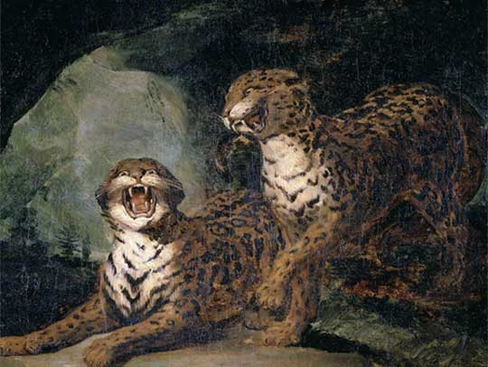

你的审美性格画像：美洲豹
习惯于带着批判性思维去审美，美学对你而言其实就是哲学。

习惯于带着批判性思维去审美，美学对你而言其实就是哲学。
善于发现看出许多别人看不出或者等不及发现的深层含义，因此达利、沃霍尔等哲学意味较强的艺术家就是你的菜。
你的内心强大，主要不在于影响感染别人，而是很难受到他人或外界影响。
因为你的严谨和“严肃”，你不是个通常意义上大众眼中有趣的人，但无聊总是和你绝缘，因为你总能为自己找到乐趣，尤其擅长在琐碎的日常发现美。
因为你的严谨和“严肃”，你不是个通常意义上大众眼中有趣的人，但无聊总是和你绝缘，因为你总能为自己找到乐趣，尤其擅长在琐碎的日常发现美。
你的美学性格决定了你读书工作生活很容易就成了模范，因此你的存在让人颇有压力。不过好在因为你的能力总是被人需要，尤其是在关键时刻，因此人缘不算差。
超现实主义绘画大师级人物。享有“当代艺术魔法大师”的盛誉。
波普艺术的倡导者和领袖，也是对波普艺术影响最大的艺术家。
*请注意，审美性格原则上没有优劣高低，本测试旨在帮助测试者认识自己，从而能在特定场景做出更有效率的消费选择。